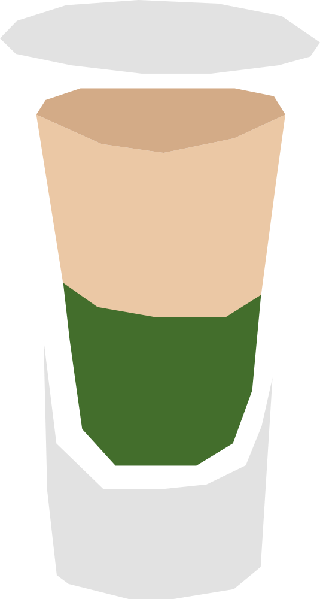

¿Springbok o Antidorcas marsupialis?
Shot icónico creado en Sudáfrica durante los años 80, cuyo nombre honra al springbok, el antílope emblema nacional del país y también de su selección de rugby. Sus dos capas de colores contrastantes buscan imitar visualmente el pelaje del animal.
RECETA
- 30 ml crema de menta
- 30 ml Amarula
- Hielo
- Agrega la crema de menta a un vaso pequeño o shot.
- Vierte lentamente la Amarula sobre el dorso de una cuchara para crear dos capas.
- Sirve inmediatamente.
Vaso: Vaso de chupito